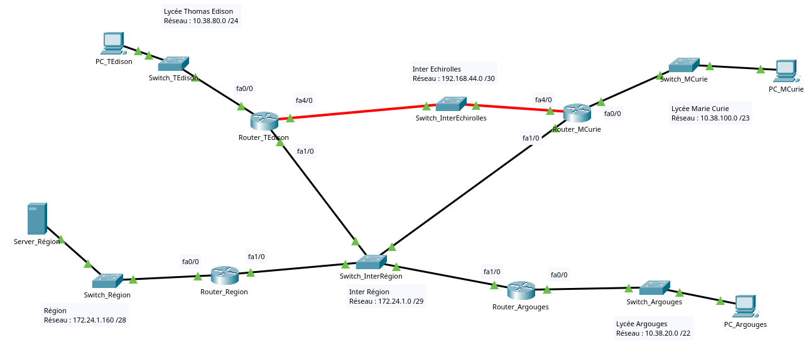

Exercices Réseau : Configuration d'un réseau IP, Passerelles, Routeurs
Exercice : Réseaux Région - 3 Lycées

Réseaux :
- Région : 172.24.1.160 /28
- Lycée Thomas Edison : 10.38.80.0 /24
- Lycée Marie Curie : 10.38.100.0 /23
- Lycée Argouges : 10.38.20.0 /22
- Inter Région : 172.24.1.0 /29
- Inter Echirolles : 192.168.44.0 /30
Etape 1 :
- Configurer les adresses IP et les passerelles des PC/Server
- Configurer les adresses IP des interfaces des routeurs
etape1_config_IP_Passerelles.pka
Router_Region :
- fa0/0 Router_Region : Dernière adresse attribuable du réseau Région
- fa1/0 Router_Region : Dernière adresse attribuable du réseau
Inter Région Router_Argouges :
- fa0/0 Router_Argouges : Dernière adresse attribuable du réseau Argouges
- fa1/0 Router_Argouges : 2ième adresse du réseau Inter Région
Router_MCurie :
- fa0/0 Router_MCurie : Dernière adresse attribuable du réseau Marie Curie
- fa1/0 Router_MCurie : 3ième adresse du réseau Inter Région
- fa4/0 Router_MCurie : Dernière adresse attribuable du réseau Inter Echirolles
Router_TEdison :
- fa0/0 Router_TEdison : Dernière adresse attribuable du réseau Thomas Edison
- fa1/0 Router_TEdison : 4ième adresse du réseau Inter Région
- fa4/0 Router_TEdison : Première adresse du réseau Inter Echirolles
Server_Région : Première adresse du réseau Région
PC_TEdison : 1er adresse du réseau Thomas Edison
PC_MCurie : 1er adresse du réseau Marie Curie
PC_Argouges : 1er adresse du réseau Argouges
Etape 2 :
Configurer les routes pour que :
- le réseau Lycée Thomas Edison communique avec le réseau Région
- le réseau Lycée Marie Curie communique avec le réseau Région
- le réseau Lycée Argouges communique avec le réseau Région
Etape 3 :
Le cable reliant le Lycée Thomas Edison à la région est sectionné !
- Changer la route dans le Router_TEdison pour passer par Router_MCurie pour joindre le réseau Région
- Changer la route dans le Router_Region pour passer par Router_MCurie pour joindre le réseau Thomas Edison
- Ajouter une route dans le Router_MCurie pour joindre le réseau Thomas Edison
etape3_rupture_avec_TEdison.pka
Etape 4 :
- Configurer les routes dans Router_Region par accèder aux 3 réseaux des 3 Lycées.
- Configurer les 3 routeurs des Lycées pour joindre le réseau Région.
- Configurer les routes de Router_TEdison et Routeur_MCurie dans comminuquer directement sans passer par Router_Region